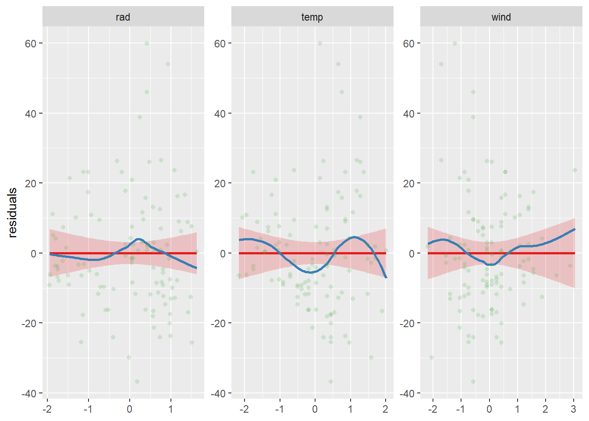

Aprender a reportar los resultados de los modelos.
2 Introducción a los modelos de regresión
El objetivo de un análisis estadístico es estimar los parámetros del modelo que conducen al mejor ajuste del mismo a nuestros datos. El mejor modelo es aquel que explica la mayor variabilidad posible de la variable respuesta, siempre que los parámetros del modelo sean estadísticamente significativos. No existe un único modelo sino una gran cantidad de modelos que se ajustan a nuestros datos en mayor o menor medida. De entre dos modelos que expliquen la misma variabilidad debemos quedarnos con el más simple de todos (el más parsimonioso).
All models are wrong, but some are useful
— George E. P. Box
El análisis de regresión se usa para explicar o predecir la relación lineal entre una variable Y (variable respuesta o dependiente), y una o más variables explicativas o independientes. Cuando hay una variable explicativa hablamos de regresión simple y cuando hay varias es regresión múltiple. Si la(s) variable(s) explicativas son categóricas estamos ante un análisis de la varianza o ANOVA, que al igual que antes puede ser unifactorial si solo hay una variable explicativa (one-way ANOVA) o multifactorial si hay más. Por último, si las variables explicativas son una combinación de categóricas y continuas estaremos antes un ANCOVA (análisis de la covarianza) (Cayuela and De la Cruz 2022). Todos estos nombres hacen referencia a tipos de análisis de regresión que en R se pueden calcular con una única función: lm(m).
3 Supuestos de los modelos lineales
La aplicación de un modelo lineal queda supeditado al cumplimiento de una serie de supuestos.
Normalidad: los modelos lineales asumen una distribución normal de los residuos del modelo. El criterio de normalidad se refiere a los residuos del modelo y no a la variable dependiente, aunque en gran parte la distribución de los residuos viene definida por la distribución de la variable dependiente. Por eso, una forma de cumplir el supuesto de normalidad es transformar la variable respuesta. Si la variable dependiente son unos y ceros (presencia/ausencia o vivo/muerto), o bien es un conteo (nº individuos) los residuos no van a ser normales. En estos casos específicos utilizaremos modelos lineales generalizados.
Linealidad: la relación entre la variable dependiente y la independiente es lineal o puede expresarse como una combinación lineal de parámetros.
4 Fundamentos matemáticos de una regresión lineal simple
Asumiendo la hipótesis de que y se puede explicar como una función lineal de x, podemos expresar y como:
\[
y = a + bx
\]
Al parámetro a se le denomina intercepto y es el valor de la variable respuesta cuando la variable independiente es igual a cero. Al parámetro b se le denomina pendiente y representa cuánto aumenta la variable respuesta por unidad de la variable independiente. Basta estimar los parámetros a y b para conocer el valor de la variable respuesta para cada valor de la variable independiente.
Para entender c√≥mo se estiman recordemos que los datos de una regresi√≥n son tomados de manera pareada, es decir que en una misma observaci√≥n tenemos un dato para la variable respuesta (yi) y para la variable independiente (xi). Sin embargo, los parámetros a y b son los mismos para todos los pares de datos por lo que a menos que el modelo prediga con exactitud cada una de las observaciones tendremos un error asociado al modelo. Dicho error o residuo (ùúÄùëñ) es la diferencia entre el valor predicho de la variable respuesta (≈∂i) para un determinado valor de la variable independiente y el valor real observado de nuestra variable respuesta (yi) en dicha observaci√≥n. Para cada observaci√≥n tendremos:
\[RMS = \frac{RSS}{n-2}\] Asociado a los errores del modelo podemos calcular el grado de ajuste del mismo para lo que se utiliza el coeficiente de determinación (R2), que se define como la fracción de la variabilidad de la variable respuesta explicada por la variación de la variable independiente. Si la variabilidad total de la variable respuesta es SSY (la suma de las diferencias entre yi y la media de y al cuadrado) y la parte no explicada por el modelo es RSS, definimos el coeficiente de determinación como:
\[R^2 = \frac{SSY-RSS}{SSY} \] Al ser una proporción, el coeficiente de determinación se define entre 0 y 1, cuanto más se acerque a 1 mayor será la variabilidad explicada y mejor se ajustará el modelo a los datos.
Los parámetros del modelo son realmente una estimación de los verdaderos valores de los parámetros poblacionales. Por ello, estos parámetros llevan asociados una incertidumbre y se necesita testar estadísticamente si los parámetros estimados son estadísticamente distintos de cero. Esto es especialmente importante para la pendiente ya que su significación nos indicaría que hay un efecto de la variable independiente sobre la variable respuesta. La hipótesis nula es que b no es diferente de cero. La significación de estos parámetros se comprueba mediante un t-test en la función lm() (evalúa la relación entre cada variable y la variable respuesta mientras se controlan las demás). Mediante F-ratio con anova() se evalúa la relación entre la variabilidad explicada por el modelo y la variabilidad explicada por esa variable.
library(tidyverse)cars |>ggplot() +geom_point(aes(x = speed, y = dist)) +labs(x ="Velocidad (millas/h)", y ="Distancia de frenado (pies)")
m_cars <-lm(dist ~ speed, data = cars)summary(m_cars)
Call:
lm(formula = dist ~ speed, data = cars)
Residuals:
Min 1Q Median 3Q Max
-29.069 -9.525 -2.272 9.215 43.201
Coefficients:
Estimate Std. Error t value Pr(>|t|)
(Intercept) -17.5791 6.7584 -2.601 0.0123 *
speed 3.9324 0.4155 9.464 1.49e-12 ***
---
Signif. codes: 0 '***' 0.001 '**' 0.01 '*' 0.05 '.' 0.1 ' ' 1
Residual standard error: 15.38 on 48 degrees of freedom
Multiple R-squared: 0.6511, Adjusted R-squared: 0.6438
F-statistic: 89.57 on 1 and 48 DF, p-value: 1.49e-12
# Calculamos a mano la bondad de ajuste del modelo:res <-resid(m_cars)summary(res)
Min. 1st Qu. Median Mean 3rd Qu. Max.
-29.069 -9.525 -2.272 0.000 9.215 43.201
Analysis of Variance Table
Response: dist
Df Sum Sq Mean Sq F value Pr(>F)
speed 1 21186 21185.5 89.567 1.49e-12 ***
Residuals 48 11354 236.5
---
Signif. codes: 0 '***' 0.001 '**' 0.01 '*' 0.05 '.' 0.1 ' ' 1
# La tabla ANOVA tiene una serie de columnas que resumen la partición de la suma de cuadrados# La F se calcula bajo el supuesto de b = 0# Un p-valor de X quiere decir que X de cada 10 veces obtendremos por azar un F-ratio igual al que hemos obtenido con las observaciones.
5 Ajustando modelos lineales en R
5.1 Regresión lineal multiple
La regresión lineal múltiple es un modelo lineal con dos o más variables independientes continuas. El efecto de las variables explicativas sobre la variable respuesta puede no ser exclusivamente independiente. Pudiera ser que la relación entre la variable respuesta y una variable explicativa estuviera modulada por otra variable explicativa y tendríamos una interacción.
üí°La inclusi√≥n de variables en el modelo aumenta el número de parámetros a estimar. De forma general se suele recomendar tener al menos 10 observaciones independientes por parámetro a estimar, aunque como siempre esto no debe tomarse a raja tabla.
plot_model(m_ozono_int, terms =c("rad", "temp", "wind"), show.data =TRUE, type ="resid")

# Para representar las predicciones del gráficoplot_model(m_ozono_int, type ="pred",terms =c("temp","rad[90, 270]")) +labs(title ="", x ="Temperature", y ="Ozone concentration", color ="Radiation") +theme_bw()
plot_model(m_ozono_int, type ="pred",terms =c("temp","wind[7, 13]")) +labs(title ="", x ="Temperature", y ="Ozone concentration", color ="Wind") +theme_bw()
# Check residualsx11()check_model(m_pinos)# Pero... no hemos acabado# Una de las principales razones de usar factores es conocer las diferencias entre los niveles del factorpaircomp <- emmeans::emmeans(m_pinos, specs = pairwise ~ Irrig)paircomp
# Representación del modeloplot_model(m_pinos, type ="pred", terms ="Irrig", show.data =TRUE, jitter =0.5) +labs(title ="", x ="Tratamiento de riego", y ="Incremento en diámetro") +theme_bw()plot(paircomp, comparison =TRUE) +labs(title ="", x ="Tratamiento de riego", y ="Incremento en diámetro") +theme_bw()# Tablas de resultadostidy(m_pinos)
# Interpretación de los parámetros# Figura con la relación entre las variables continuas para cada nivel del tratamientoplot_model(m_encinas2, type ="pred", terms =c("DI","Competition")) +labs(title ="", x ="Crecimiento", y ="Producción de bellotas", color ="Competencia") +theme_bw()
6 Modelos lineales mixtos
Los modelos mixtos estiman parámetros (interceptos o pendientes) que varían según unos niveles de agregación especificados en vez de considerarse plenamente independientes. Ahora el intercepto a o la pendiente b van a seguir una distribución normal que depende de otro/s predictor/es:
Este tipo de modelos es muy útil para modelizar datos estructurados en el espacio o en el tiempo (medidas repetidas) a la vez que permiten aprovechar todos los datos.
üí°Si te interesan los modelos mixtos, puedes leer el cap√≠tulo Multilevel linear models: the basics de Gelman and Hill (2006).
# install.packages("glmmTMB")library(glmmTMB)# install.packages("lmerTest")library(lmerTest)# install.packages("broom.mixed")library(broom.mixed)library(palmerpenguins)# Un solo grupo de datoslm(flipper_length_mm ~ body_mass_g, data = penguins)
Las funciones de enlace sirven para linealizar la relación entre la variable respuesta y la independiente. Para cada distribución de la variable respuesta y, por tanto de sus residuos, hay funciones de enlace por defecto (canónicas).
Funciones de enlace canónicas para diferentes distribuciones de errores.
# install.packages("DHARMa")library(DHARMa)ggplot(titanic) +geom_count(aes(x = Pclass, y = Survived))
m_binomial <-glmmTMB(Survived ~ Pclass, data= titanic, family ="binomial")summary(m_binomial)
# La estimación de los parámetros (= probabilidad de supervivencia) está en escala logit. logit(p) = ln(p / (1-p))# Intercepto: probabilidad de supervivencia del nivel de referencia (primera clase)co_binomial <-fixef(m_binomial)plogis(co_binomial[[1]][1])
Object of Class DHARMa with simulated residuals based on 250 simulations with refit = FALSE . See ?DHARMa::simulateResiduals for help.
Scaled residual values: 0.5820151 0.8080241 0.9228156 0.9842659 0.2333578 0.4973875 0.1898462 0.1908719 0.9960875 0.7314862 0.9679369 0.9849238 0.3600107 0.3893774 0.4193544 0.6189507 0.3593321 0.5994035 0.2163067 0.9662837 ...
# DHARMa simula residuos utilizando las predicciones del modelo para generar múltiples conjuntos simulados de valores de respuesta, basándose en la distribución estadística asumida, en este caso y ~ binomial(n, p). Los residuos de DHARMa son redisuos simulados entre el nº de simulaciones, lo que hace que tome valores entre 0 y 1 a lo largo de toda la variable predictora.# Sobredispersión: varianza residual entre grados de libertad de la varianza residual. Debería estar en torno a uno. Zuur et al. 2013 (A beginner’s guide to GLM and GLMM with R. A frequentist and Bayesian persperctive for ecologists.)e <-resid(m_binomial, type ="pearson")n <-nrow(m_binomial$frame)p <-length(fixef(m_binomial))sum(e^2)/(n-p)
[1] 1.003378
check_overdispersion(m_binomial)
# Overdispersion test
dispersion ratio = 1.001
p-value = 0.952
References
Cayuela, Luis, and Marcelino De la Cruz. 2022. Análisis de Datos Ecológicos En r. MundiPrensa.
Gelman, Andrew, and Jennifer Hill. 2006. Data Analysis Using Regression and Multilevel/Hierarchical Models. Analytical Methods for Social Research. Cambridge: Cambridge University Press.